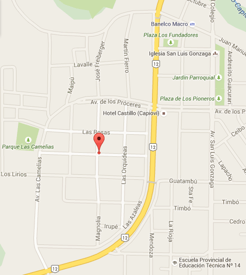

El Hotel Castillo está estratégicamente ubicado en el acceso a la turística localidad de Capioví, en el centro oeste de la Provincia de Misiones. Emplazado sobre la Ruta Nacional 12; que une a las ciudades de Posadas y Puerto Iguazú; y distante 120 y 180 km respectivamente de cada una de ellas; resulta un paso obligado y un descanso imperdible para los turistas que visitan la Provincia de Misiones.
La construcción del Hotel e inauguración del mismo por primera vez data del año 1987, con el único objetivo de alojar exclusivamente al personal de la conocida empresa papelera de nuestra localidad. De este modo funcionó durante más de diez años, hasta que cambiaron las condiciones de la empresa, obligándola a desprenderse del predio y del Hotel.
En 1999, el hotel es adquirido por el Sr. Hugo Castillo, un hijo de Capioví, jugador de fútbol en México, quién toma la decisión de invertir, crecer y generar más fuentes de trabajo en su pueblo natal, adoptando a partir de entonces el nombre de HOTEL CASTILLO.
El Hotel Castillo ha ganado en los últimos años un gran prestigio y reconocimiento en la zona, a partir de la ampliación de sus servicios de alojamiento y comedor, la construcción de nuevas habitaciones, la incorporación de una piscina y la constante capacitación y buena atención de su personal. Actualmente cuenta con 31 habitaciones, ambiente climatizado, frigobar, restaurante, piscina, estacionamiento cubierto, salón de reuniones y eventos y otros servicios que lo transformaron en el único Hotel Tres Estrellas de la “Región de las Flores”.
Premio Internacional a la Hotelería, Gastronomía y Turismo 2008
El Hotel Castillo de Capioví ha sido recientemente reconocido con el "Premio Internacional a la Hotelería, Gastronomía y Turismo 2008", por la calidad en la atención que presta a sus visitantes de todo el mundo. El galardón es otorgado conjuntamente por “Editorial Office y el “Trade Leaders Club”; en virtud de la excelencia en los servicios que brindan las empresas del sector turístico. El emprendimiento recibió simultáneamente la insignia de oro "Global Quality Management".
Durante el 2007, miembros del “Trade Leaders Club” visitaron y evaluaron hoteles y otras empresas del sector turístico argentino. En Misiones fue seleccionado el Hotel Castillo como una de las 50 empresas postulantes a obtener la distinción internacional. La elección se realizó a través del voto de más de 7.000 empresas asociadas a las publicaciones en 112 países.
Entre los aspectos que los socios evaluaron durante su visita se encuentran la iniciativa y calidad; tanto en las instalaciones del hotel como en la gestión interna, externa y del personal; en todos ellos el Hotel Castillo logró destacarse, alcanzando así la mención internacional, entregada en enero de 2008 en Madrid, España. A fin de celebrar junto a quienes acompañaron el emprendimiento desde su creación, los directivos del hotel invitaron a colegas de la actividad turística provincial, clientes y proveedores, funcionarios del área, autoridades municipales y provinciales, medios de comunicación, comunidad de Capioví y localidades vecinas a la presentación del trofeo internacional.
En dicha oportunidad el Gobierno de la Provincia de Misiones, a través de la Sub-secretaría de Turismo y el Ministerio de Ecología, Recursos Naturales Renovables y Turismo, ha otorgado un “Reconocimiento Especial” al mérito y a la excelencia en los servicios que brinda el Hotel a los turistas que visitan la Provincia de Misiones.
Destacados
Piscina
Restaurante
Bar/Salón
Cosas que hacer
Piscina
Restaurante
Bar/Salón
En la habitación
Aire acondicionado
Servicios
Actividades infantiles ( Ideal para niños / familias )
Servicio de lavandería
hotelcastillo@live.com.ar
Ruta Nº 12 y Av. Los Proceres
